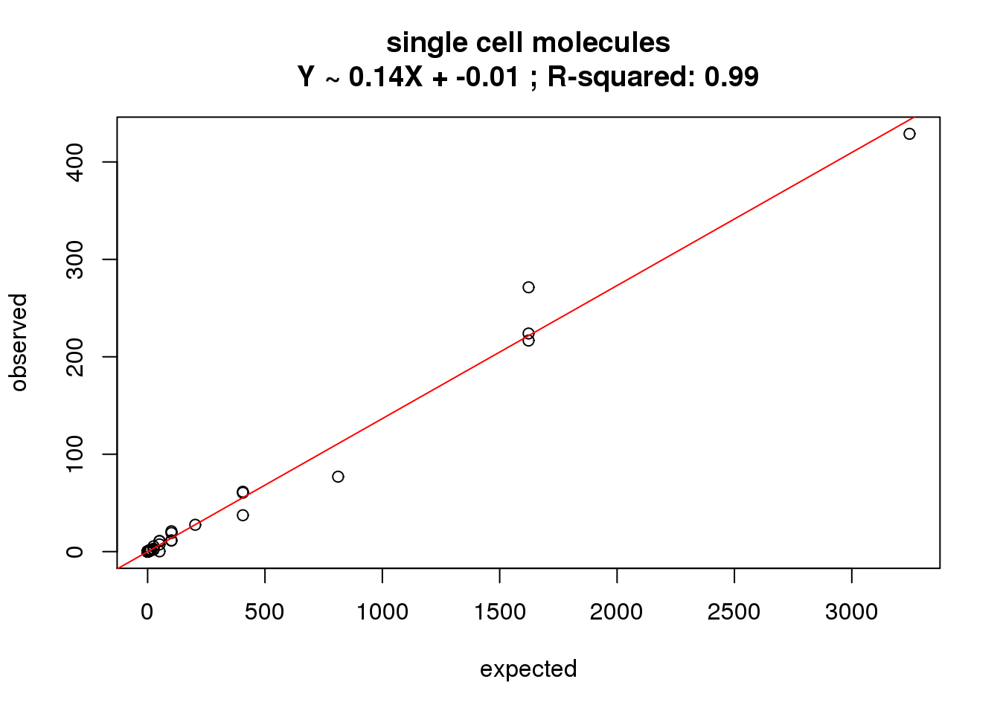
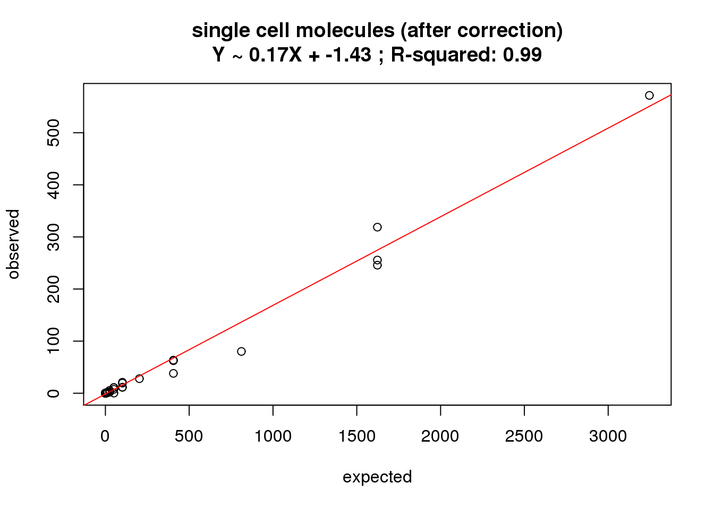
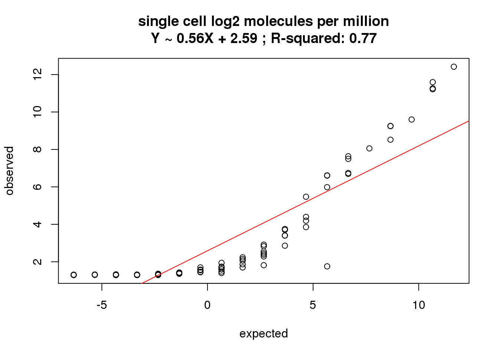

Last updated: 2015-08-11
Code version: 54b5090efa940ffc9920fdee95e8364552464e2b
Input annotation.
anno <- read.table("../data/annotation.txt", header = TRUE,
stringsAsFactors = FALSE)
head(anno) individual batch well sample_id
1 19098 1 A01 NA19098.1.A01
2 19098 1 A02 NA19098.1.A02
3 19098 1 A03 NA19098.1.A03
4 19098 1 A04 NA19098.1.A04
5 19098 1 A05 NA19098.1.A05
6 19098 1 A06 NA19098.1.A06Input ERCC concentration information.
ercc <- read.table("../data/ercc-info.txt", header = TRUE, sep = "\t",
stringsAsFactors = FALSE)
colnames(ercc) <- c("num", "id", "subgroup", "conc_mix1", "conc_mix2",
"expected_fc", "log2_mix1_mix2")
head(ercc) num id subgroup conc_mix1 conc_mix2 expected_fc log2_mix1_mix2
1 1 ERCC-00130 A 30000.000 7500.00000 4 2
2 2 ERCC-00004 A 7500.000 1875.00000 4 2
3 3 ERCC-00136 A 1875.000 468.75000 4 2
4 4 ERCC-00108 A 937.500 234.37500 4 2
5 5 ERCC-00116 A 468.750 117.18750 4 2
6 6 ERCC-00092 A 234.375 58.59375 4 2stopifnot(nrow(ercc) == 92)Input molecule counts.
molecules <- read.table("../data/molecules.txt", header = TRUE,
stringsAsFactors = FALSE)Input list of quality single cells.
quality_single_cells <- scan("../data/quality-single-cells.txt",
what = "character")Keep only the single cells that passed the QC filters. This also removes the bulk samples.
molecules_single <- molecules[, colnames(molecules) %in% quality_single_cells]
anno_single <- anno[anno$sample_id %in% quality_single_cells, ]
stopifnot(ncol(molecules_single) == nrow(anno_single),
colnames(molecules_single) == anno_single$sample_id)Also remove batch 2 of individual 19098.
molecules_single <- molecules_single[, !(anno_single$individual == 19098 & anno_single$batch == 2)]
anno_single <- anno_single[!(anno_single$individual == 19098 & anno_single$batch == 2), ]
stopifnot(ncol(molecules_single) == nrow(anno_single))Remove genes with zero read counts in the single cells.
expressed_single <- rowSums(molecules_single) > 0
molecules_single <- molecules_single[expressed_single, ]
dim(molecules_single)[1] 17478 563How many genes have greater than or equal to 1,024 molecules in at least one of the cells?
overexpressed_genes <- rownames(molecules_single)[apply(molecules_single, 1,
function(x) any(x >= 1024))]15 have greater than or equal to 1,024 molecules. Remove them.
molecules_single <- molecules_single[!(rownames(molecules_single) %in% overexpressed_genes), ]Accorindg to Pollen et al., there are total 28,000 ERCC molecule per cell when the ERCC stock is used in 1:20,000 dilution. In our study, I used 1:50,000 dilution. Therefore, we have total 28000/2.5= 11200 ERCC molecule per cell.
#### sort ercc file by gene ID
ercc <- ercc[order(ercc$id), ]
#### calculate the number of each ERCC based on the genes detected
ratio <- 11200/ sum(ercc[,"conc_mix1"])
ratio[1] 0.1081968ercc$counts <- ercc[,"conc_mix1"] * ratio
head(ercc) num id subgroup conc_mix1 conc_mix2 expected_fc
70 70 ERCC-00002 D 1.500000e+04 3.000000e+04 0.50
72 72 ERCC-00003 D 9.375000e+02 1.875000e+03 0.50
2 2 ERCC-00004 A 7.500000e+03 1.875000e+03 4.00
26 26 ERCC-00009 B 9.375000e+02 9.375000e+02 1.00
67 67 ERCC-00012 C 1.144409e-01 1.716614e-01 0.67
86 86 ERCC-00013 D 9.155273e-01 1.831055e+00 0.50
log2_mix1_mix2 counts
70 -1.00 1.622953e+03
72 -1.00 1.014345e+02
2 2.00 8.114764e+02
26 0.00 1.014345e+02
67 -0.58 1.238215e-02
86 -1.00 9.905717e-02#### try 28000 to see if integers were generated
ratio_t <- 28000/ sum(ercc[,"conc_mix1"])
ercc$counts_t <- ercc[,"conc_mix1"] * ratio_t
head(ercc) num id subgroup conc_mix1 conc_mix2 expected_fc
70 70 ERCC-00002 D 1.500000e+04 3.000000e+04 0.50
72 72 ERCC-00003 D 9.375000e+02 1.875000e+03 0.50
2 2 ERCC-00004 A 7.500000e+03 1.875000e+03 4.00
26 26 ERCC-00009 B 9.375000e+02 9.375000e+02 1.00
67 67 ERCC-00012 C 1.144409e-01 1.716614e-01 0.67
86 86 ERCC-00013 D 9.155273e-01 1.831055e+00 0.50
log2_mix1_mix2 counts counts_t
70 -1.00 1.622953e+03 4.057382e+03
72 -1.00 1.014345e+02 2.535864e+02
2 2.00 8.114764e+02 2.028691e+03
26 0.00 1.014345e+02 2.535864e+02
67 -0.58 1.238215e-02 3.095537e-02
86 -1.00 9.905717e-02 2.476429e-01correlate_ercc <- function(observed, expected, description = "") {
# Plots the relationship between the observed ERCC data and the expected ERCC
# concentrations.
# Args:
# observed: vector of summary statistic of observed ERCC counts
# expected: vector of ERCC concentrations
# description: optional string to add to title
plot(expected, observed)
ercc_fit <- lm(observed ~ expected)
abline(ercc_fit, col = "red")
title(sprintf("%s\nY ~ %.2fX + %.2f ; R-squared: %.2f", description,
ercc_fit$coefficients[2], ercc_fit$coefficients[1],
summary(ercc_fit)$r.squared))
}
#### number of ERCC detected in single cells
ercc_rows_molecules_single <- grep("ERCC", rownames(molecules_single))
length(ercc_rows_molecules_single)[1] 81#### keep only the detected ERCC in the ercc list
ercc_molecules_single <- ercc[ercc$id %in% rownames(molecules_single), ]
stopifnot(rownames(molecules_single[ercc_rows_molecules_single, ]) ==
ercc_molecules_single$id)
#### what's the correlation of counts?
correlate_ercc(rowMeans(molecules_single[ercc_rows_molecules_single, ]), ercc_molecules_single$counts,
description = "single cell molecules")
First correct and look for the correlation. See Grun et al. 2014 for details.
molecules_single_collision <- -1024 * log(1 - molecules_single / 1024)
correlate_ercc(rowMeans(molecules_single_collision[ercc_rows_molecules_single, ]), ercc_molecules_single$counts,
description = "single cell molecules (after correction)")
molecules_single_cpm <- cpm(molecules_single_collision, log = TRUE)
correlate_ercc(rowMeans(molecules_single_cpm[ercc_rows_molecules_single, ]), log2(ercc_molecules_single$counts),
description = "single cell log2 molecules per million")
sessionInfo()R version 3.2.0 (2015-04-16)
Platform: x86_64-unknown-linux-gnu (64-bit)
locale:
[1] LC_CTYPE=en_US.UTF-8 LC_NUMERIC=C
[3] LC_TIME=en_US.UTF-8 LC_COLLATE=en_US.UTF-8
[5] LC_MONETARY=en_US.UTF-8 LC_MESSAGES=en_US.UTF-8
[7] LC_PAPER=en_US.UTF-8 LC_NAME=C
[9] LC_ADDRESS=C LC_TELEPHONE=C
[11] LC_MEASUREMENT=en_US.UTF-8 LC_IDENTIFICATION=C
attached base packages:
[1] stats graphics grDevices utils datasets methods base
other attached packages:
[1] ggplot2_1.0.1 edgeR_3.10.2 limma_3.24.9 knitr_1.10.5
loaded via a namespace (and not attached):
[1] Rcpp_0.11.6 digest_0.6.8 MASS_7.3-40 grid_3.2.0
[5] plyr_1.8.2 gtable_0.1.2 formatR_1.2 magrittr_1.5
[9] scales_0.2.4 evaluate_0.7 stringi_0.4-1 reshape2_1.4.1
[13] rmarkdown_0.6.1 proto_0.3-10 tools_3.2.0 stringr_1.0.0
[17] munsell_0.4.2 yaml_2.1.13 colorspace_1.2-6 htmltools_0.2.6